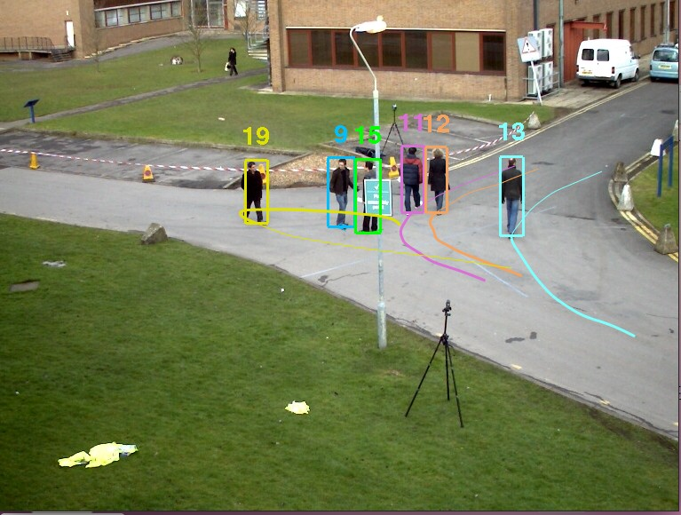
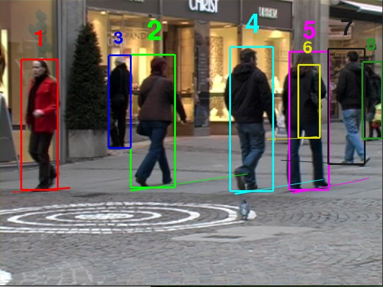
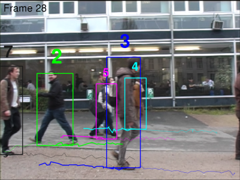
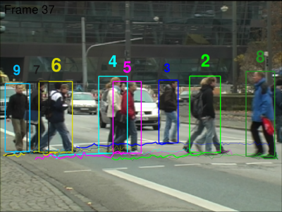
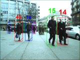
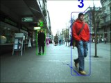
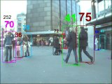
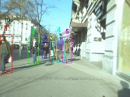

All annotations were done by manually placing bounding
boxes around pedestrians and interpolating their trajectories between
key frames.
The trajectories were then smoothed to avoid discontinuous or jittery
movements.
All
targets were annotated in all sequences, even
in case of total occlusion. Each person entering the field of view
acquires a unique ID, i.e. if a person leaves the screen and later
reappears again, a new ID is assigned. Please note that bounding boxes
are not always perfectly aligned due to articulation, interpolation
and mistakes made by the annotator.
The annotations are saved in xml files using the
CVML Specification,
similar to the ground truth of the
CAVIAR dataset.
For each dataset there are two ground truth files. One (complete)
contains annotations for all visible targets, the other one (cropped)
only contains targets within the predefined tracking area used in our
experiments.
Please cite our work if you use the provided ground truth.
All annotations were done in View001. The PETS 2009 dataset is available
here.

Tracking Area in world coordinates (xmin, xmax, ymin, ymax): (-14069.6, 4981.3, -14274.0, 1733.5)
We here provide our own annotations for the
widely used TUD-Stadtmitte sequence, where bounding boxes for all
targets inside the field of view (even the ones entirely occluded) are
annotated. The TUD dataset is available
here.

Tracking Area in world coordinates (xmin, xmax, ymin, ymax): (-19, 12939, -48, 10053)
The camera calibration for the TUD-Stadtmitte sequence is
here.
It has the same format as the calibration for the
PETS dataset.
We extend the
original
ground truth for these two sequences by providing correct association
of people identities across frames. The bounding boxes positions and
sizes are kept unchanged. Additionally, we linearly interpolate the
annotations through occlusions, such that, again, all targets are
annotated, regardless of their visibility fraction.
 
Similar to TUD, we extend the
original
ground truth for several ETH sequences by providing correct association
of people identities across frames. The bounding boxes positions and
sizes are kept unchanged. The interpolated version for occluded pedestrians will appear shortly.



